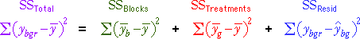
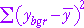
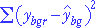

| ybgr | the rth of the observations in block b that get treatment g |
| mean response in block b | |
| mean response for all observations getting treatment g | |
| overall mean response for all observations |
Notation
For randomised block data, we use the following notation:
| ybgr | the rth of the observations in block b that get treatment g |
| mean response in block b | |
| mean response for all observations getting treatment g | |
| overall mean response for all observations |
In many examples, there is only a single observation for each combination of block and treatment, but our notation allows for two or more.
Sums of squares
For randomised block data, we again split the total sum of squares into components, but now need to use three components.

The block and treatment sums of squares describe variation that is explained by the randomised block model whereas the residual sum of squares is unexplained.
|  | The total sum of squares reflects the total variability of the response. |
| The sum of squares between blocks measures the variability of the block means. | |
| The sum of squares between treatments measures the variability of the treatment means. | |
|  | The residual sum of squares describes the variation that is unexplained by blocks or treatments. |
Note that all summations are over all observations in the data set.
Residuals and residual variation
As in regression, we define residuals to be the difference between the recorded response values and the closest we can get from our model. For a randomised block model, the best estimate is:
 = b0 + b1 xi
= b0 + b1 xi
This can be interpreted as: